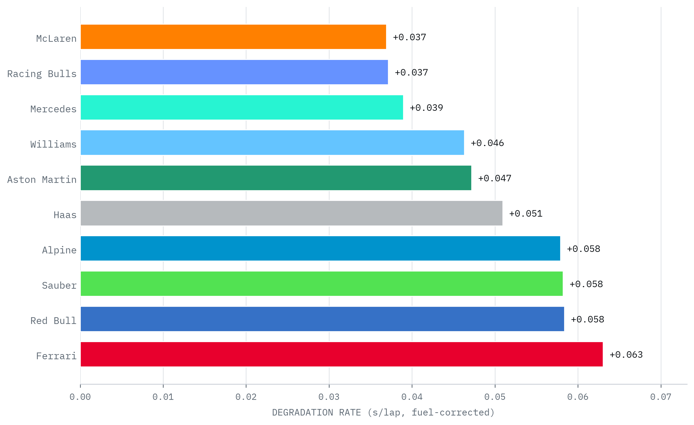
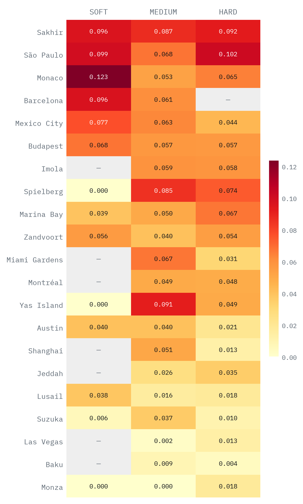
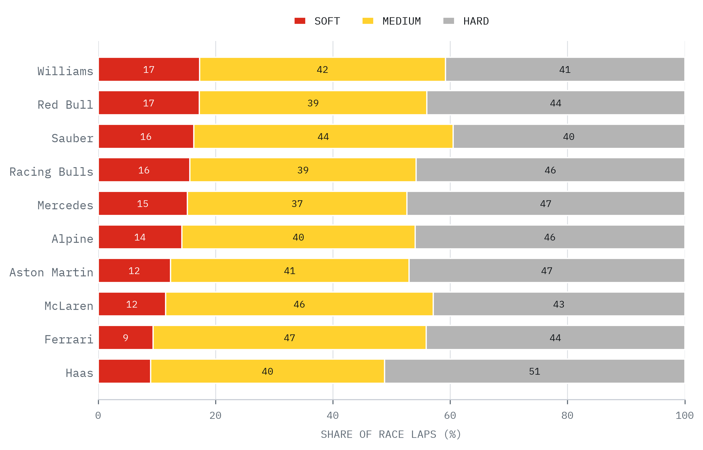
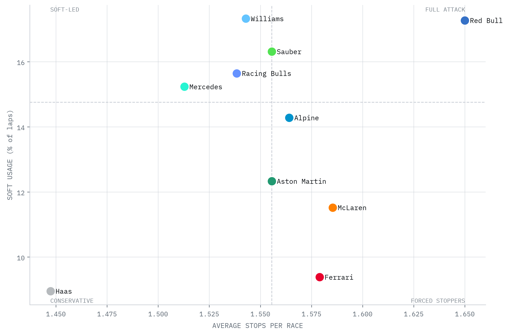
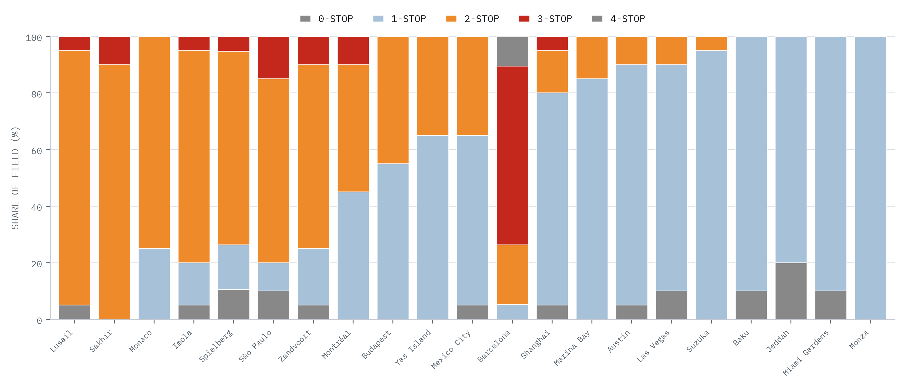
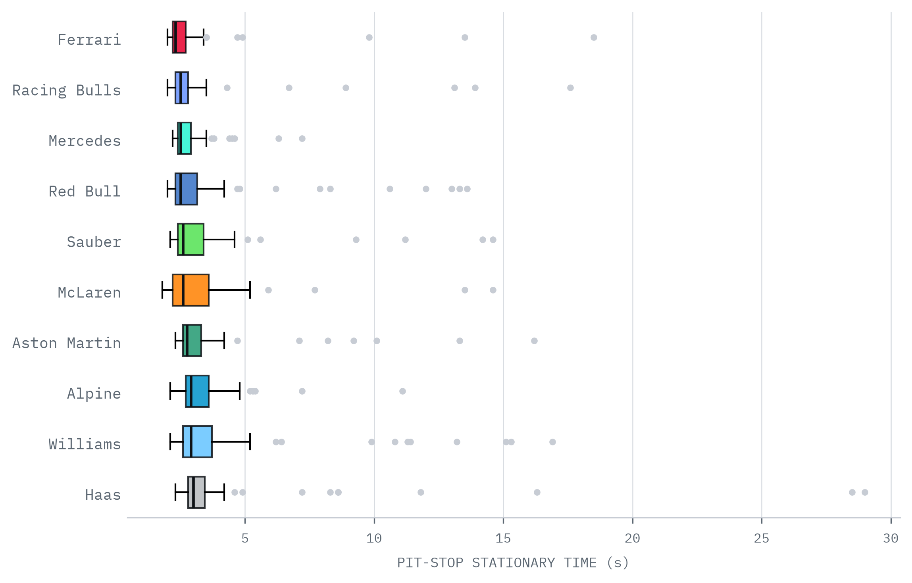

Degradation rate is the per-lap pace loss as a tyre ages — fuel-corrected, fitted per compound, per race, then averaged across the 21 dry rounds (wet races excluded, see p. 3). Lower is better. This strips out fuel load, circuit and strategy mix, leaving tyre management itself.
McLaren and Racing Bulls were the kindest to their tyres (+0.037 s/lap), with Mercedes just behind — converting gentle wear into longer stints and more strategic freedom. Ferrari degraded hardest (+0.063), and tellingly Red Bull sat near the bottom too (+0.058): fast over one lap, tough on its tyres over a stint.
The spread — about 0.026 s/lap from best to worst — compounds over a stint into real lap time, and decides who can make a one-stop work or extend under pressure. It is the clearest season-long separator of tyre management.

Each cell is the fuel-corrected degradation rate (s/lap) for a compound at one circuit, pooled across the field. Darker = harsher on tyres. Circuits are ranked most to least punishing.
Bahrain and São Paulo top the table — abrasive surfaces and high-energy corners that chew through rubber, the harder compounds shedding 0.08–0.10 s/lap. These are the races where tyre management decides the result.
Monza, Baku and Las Vegas sit at the bottom — smooth, low-energy layouts where degradation is barely measurable and the one-stop is routine.
Dry races only. The Australian, British and Belgian GPs are excluded — their wet, drying tracks make tyre wear unmeasurable (lap times improve as the track dries, not as tyres age). Track-evolution negatives are floored to zero; “—” marks a compound run too little to fit a rate.

Each bar is a team's share of race laps on each compound across the 21 dry rounds. The soft is a qualifying tyre, so it is a small slice of race running — but how small is a fingerprint of strategic intent. Sorted most to least soft-heavy.
Williams and Red Bull leaned hardest on the soft (≈17% of laps), pairing it with more frequent stops — trading tyre life for track position and outright pace.
Haas and Ferrari ran the soft least (just 9%), living on the medium and hard — banking on durability and longer stints over fresh-tyre bursts.
Usage is partly chosen and partly forced: a tyre-limited car must manage, while a strong one can afford to attack. Read alongside the degradation ranking, it separates intent from necessity.

Horizontal: average pit stops per car-race. Vertical: share of laps on the soft. The field medians split the field into four quadrants — top-right is the most aggressive corner, bottom-left the most conservative.
Red Bull and Williams sit top-right — the most soft and among the most stops, the season's most aggressive operations.
Haas and Aston Martin anchor the bottom-left — fewest stops, least soft, banking on track position and durability.
McLaren and Ferrari made the most stops yet reached for the soft the least — race pace from the medium and hard, not the qualifying tyre. Sauber is the mirror: soft-led on the fewest stops.


stop_duration, null rows excluded; all 24 races included.The distribution of pit-stop stationary times per team across the season. Box = the middle half of stops, line = median, dots = outliers (the botched ones). Fastest crew at the top.
Ferrari were quickest on median stationary time (2.30 s), with Racing Bulls, Mercedes and Red Bull clustered at 2.50 s. Haas brought up the rear at 3.00 s, while Williams and Alpine also sat near the slow end at 2.90 s.
A tight box means dependable stops; a long upper tail means costly fumbles. Median speed wins the routine stop — but the outliers lose races, and a single slow stop can hand back a hard-won undercut.
Across roughly 70 measured stops per team, a half-second median edge is real lap-time-equivalent — and the pit lane is where strategy plans are executed or undone under pressure.
